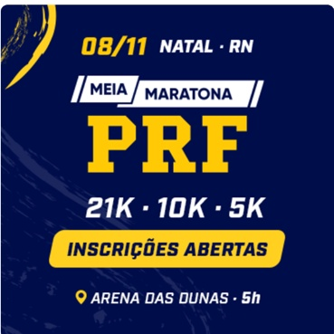
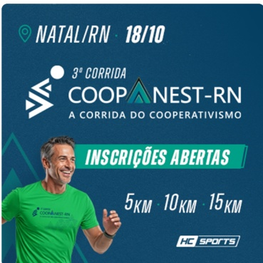

Experiência em eventos
Sobre o Hora de Correr
Corrida por dentro. Tecnologia para acompanhar cada passo.
O Hora de Correr nasce do encontro entre quem conhece uma prova no mundo real e quem sabe transformar jornadas complexas em produtos digitais simples de usar.


De onde viemos
A pista e o produto digital se encontram aqui
Produto e engenharia
Hyper Core Systems
Conhecer a Hyper Core15+
anos de mercado da HC Sports
150+
eventos realizados
200 mil+
atletas impactados
1
ecossistema para quem vive corrida
Por que isso importa
A tecnologia precisa conhecer a corrida que está tentando organizar
Uma inscrição não é só um formulário. Ela se conecta a lotes, categorias, descontos, documentos, kits, pagamentos, atendimento, largada, cronometragem e resultado.
Para quem corre
Para quem produz
Para o ecossistema
Nossa missão
Criar um ecossistema inteligente sem tirar a corrida do centro
Queremos que o atleta saiba que pode vir ao Hora de Correr para encontrar sua próxima prova e continuar acompanhado. Para quem trabalha com corrida, queremos construir uma infraestrutura digital que facilite a operação e deixe mais tempo para cuidar da experiência do evento.